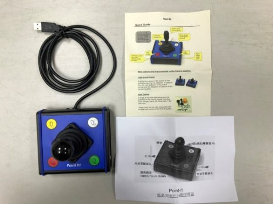
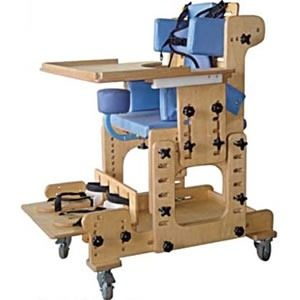
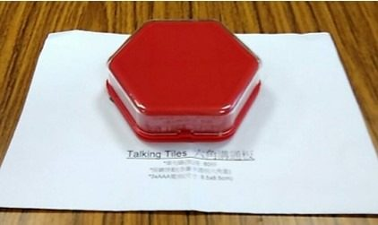

總筆數：10
| 輔具 | 使用者 | 借用期間 | 狀態 | 操作 |
|---|---|---|---|---|
 桌上型擴視機
V-CCTV-0012
桌上型擴視機
V-CCTV-0012
|
林○安（三年甲班） 首次借用 | 2024/09/12 起 2030/06/30 歸還 | 借用中 | |
 調頻輔聽系統
H-FM-0017
調頻輔聽系統
H-FM-0017
|
吳○涵（四年乙班） 首次借用 | 2025/03/05 起 2029/06/30 歸還 | 報修中 | 查看報修 |
 助行器
M-WK-0009
助行器
M-WK-0009
|
鄭○哲（五年甲班） 臨時借用 | 2026/08/25 起 2026/12/31 歸還・剩 2 個月 | 借用中 | |
 一般輪椅
M-WC-0018
一般輪椅
M-WC-0018
|
許○廷（六年乙班） 首次借用 | 2021/09/01 起 2026/09/30 歸還 | 辦理中 | 畢業歸還辦理中 前往申請紀錄 |
 溝通板
C-CB-0014
溝通板
C-CB-0014
|
黃○恩（一年甲班） 首次借用 | 2025/09/15 起 2032/06/30 歸還 | 借用中 | |
 觸摸顯示器
I-TS-0003
觸摸顯示器
I-TS-0003
|
資源班 校內使用 | 2025/02/20 起 2027/06/30 歸還 | 借用中 | |
 站立架
M-ST-0004
站立架
M-ST-0004
|
周○宇（四年丙班） 轉銜續借 | 2023/09/01 起 2028/06/30 歸還 | 借用中 | |
|
 搖桿滑鼠 I-JS-0008 |
蔡○恩（六年甲班） 首次借用 | 2022/09/01 起 2027/06/30 歸還 | 借用中 | |
|
 擺位椅 M-SE-0006 |
李○萱（二年乙班） 首次借用 | 2025/09/10 起 2031/06/30 歸還 | 借用中 | |
|
 語音溝通器 C-AAC-0011 |
何○翰（五年乙班） 首次借用 | 2024/09/01 起 2028/06/30 歸還 | 借用中 |